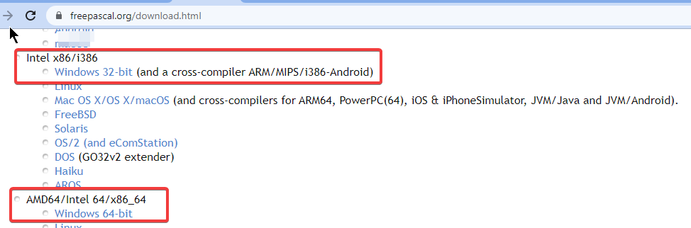
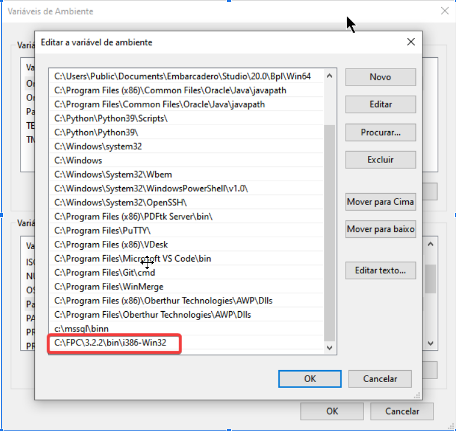
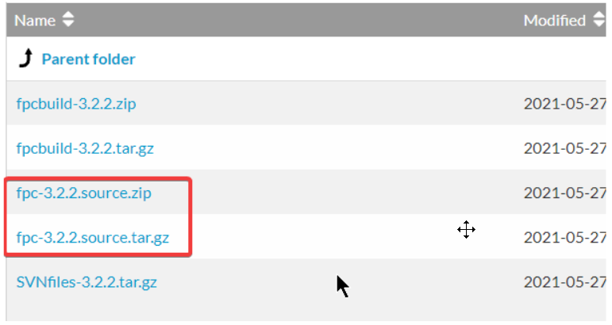

Como o Lazarus está num repositório GIT, temos outra vantagem>:atualização de versão.
Siga as instruções abaixo, embora sejam para o Windows, os princípios
são os mesmos para Linux.
Instale o FPC a partir do instalador oficial:
https://www.freepascal.org/download.html
Escolha a versão apropriada para seu sistema, a mais compativel será “Intel x86/i386->Windows 32-bit”,
mas também poderá usar a versão 64bits indicada abaixo:

A instalação é uma sequência de Next->Next->Finish e não carece de maiores detalhoes. Para fins didáticos, vamos supor daqui em diante que o tenhamos instalado em C:\FPC\3.2.2.
Acrescente à variavel de ambiente chamada PATH o caminho de instalação do FPC:

Precisará baixar o código fonte do FPC, você poderá obtê-lo em:
https://www.freepascal.org/down/source/sources.html
O código fonte normalmente está compactado e com o sufixo “source” no nome, como pode ver na imagem a seguir:

Então baixe-o, depois descompacte-o na pasta onde o FPC foi instalado, em nosso exemplo: c:\FPC\3.2.2 e então uma subpasta com o código fonte será criada e depois ficará assim: C:\FPC\3.2.2\subpasta, renomeie o nome da subpasta para sources para ser mais informativo e então anote este caminho - C:\FPC\3.2.2\sources. Iremos precisar lembrar deste path mais adiante.
Abra o cmd.exe ou o terminal.
Se tiver o Delphi instalado, recomendo que execute:
set path=C:\FPC\3.2.2\bin\i386-win32;%PATH%
Este comando servirá para que os utilitários do FPC tenham preferencia aos utilitários do Delphi que possuem o mesmo nome.
Vamos criar a pasta que receberá os arquivos do Lazarus:
mkdir c:\lazarus cd c:\Lazarus git clone https://gitlab.com/freepascal.org/lazarus/lazarus.git
O comando acima criou a pasta c:\lazarus\lazarus, este é um nome muito estranhgo para trabalharmos então vamos renomear a subpasta lazarus para um nome mais refinado como lazarus22 ficando no finalc:\lazarus\lazarus22:
ren lazarus lazarus22 cd lazarus22
mkdir configs
git branch --all
Então será listado todos os branchs existentes no repositório oficial:
E então escolha um branch das que foram listadas, escolha a fixes_2_2 que incluirá a 2.2.x mais os fixes, isto é, as correções da série 2.2. Mas se desejar uma versão que já está saindo do forno, volte ao passo anterior e renomeie o diretório de c:\lazarus\lazarus22 para outro nome mais conveniente com a versão escolhida e repita os passos anteriores novamente. Para prosseguir com o nosso exemplo usando o fixes_2_2:
git switch fixes_2_2
Vamos compilar, ainda no cmd.exe execute:
make clean make bigide
Vai demorar um pouco, relaxe e vá tomar com café enquanto isso.
A compilação gerará c:\lazarus\lazarus22\lazarus.exe, crie um atalho para ele em sua área de trabalho, mas faça-o com os seguintes parâmetros:
C:\lazarus\lazarus22\lazarus.exe --pcp=C:\lazarus\lazarus22\configsOnde C:\lazarus\lazarus22\configs é a pasta que o lazarus armazenará suas configurações. Mais tarde se decidirmos ter mais uma versão do Lazarus, a configuração de um não influenciará o outro.
ALERTA: Esteja atento a nunca usar a pasta de configuração para versões diferentes de Lazarus.
Quando a IDE iniciar-se, geralmente a primeira tela será uma busca automática pelo código fonte do FPC.
No ambiente Windows é raro encontrar a localização dos fontes sozinho então devemos clicar em “Parar” e a
procura será interrompida e daí então indicar o local onde o código fonte do FPC foi descompactado,
a saber C:\FPC\3.2.2\sources:
E então clicar em Iniciar IDE.
As instruções acima foram inspiradas na página:
https://wiki.lazarus.freepascal.org/Getting_Lazarus
Se algo sair diferente do esperado, acesse o link acima, talvez ele esclareça o que deu de errado.